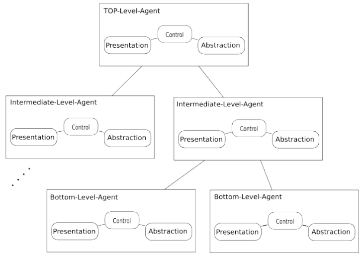

Acerca de mí

Mis amigos me conocen como Jorge Ram
Twitter: @jeyram7
Soy miembro de AXAI, empresa Mexicana de Desarrollo Web especializada en Drupal
El mito del Ninja
Guerreo Marcial muy Discreto
Experto en combate y manejo de armas
Código de Honor
- Se adapta a los estándares de Drupal: http://drupal.org/coding-standards
- Sigue el camino más ágil del Desarrollo sin perder de vista los requerimientos del cliente.
- Piensa en la accesibilidad del usauario final.
- Crea "sinergia" con el Diseñador y el Developer
- Evita "hackear" el Core
- Mantiene una Disciplina de actualización constante
Ninja Themer = Front Developer ++
Conocimiento profundo del "Tema"

.info
Define la información básica de los temas de Drupal y son obligatorios. Los valores que se definen son: name, description, screenshot, core, engine, base theme, regions, fatures, style sheets, scripts.
template.php
Para todos los condicionantes lógicos y el procesamiento de la salida existe el template.php Ayuda a mantener "limpios" los tpl.php utilizando funciones de PRE PROCESAMIENTO y/o THEME FUNCTIONS antes de ser rendereadas.
tpl.php
Haciendo una analogía, los archivos tpl.php de Drupal son los archivos que correponderían directamente a los archivos de Vista en el modelo MVC. Son una mezcla entre php y html.
El Conocimiento del API
Theming Preprocess
Módulos Cotribuidos
Views
Es el "Query Builder" de Drupal, uno de los módulos que permite crear consultas a la base de datos y definir como se mostrarán los resultados.
Display Suite
Permite tomar el control de como será desplegado el contenido, usando una interface "drag and drop" asi como ordenar nodos, views, comments, user data, entre otras características.
Panels
Si views es el "Query Builder" Panels es el "Page builder". Panels permite definir páginas, definir los elemetos que se imprimen en dichas páginas así como agregar reglas de visibilidad y de acceso desde una interfaz gráfica.
Manejo de JQuery
Las armas del Guerrero
Drush

El Shuriken de Drupal
Diseño Responsivo
Theming en Drupal 8
Recapitulando
- Contenido
- Contenido
- Contenido
- Contenido
Otros titulo
Contenido Izq
Contenido derecha imágen
Referencias
Slides realizadas con kinout
kinout on github
Fonts Bitter & Open Sans
Open Sans at google webfont directory
Bitter at google webfont directory
Gracias

Jorge Ram | @jeyram7 | http://axai.com.mx